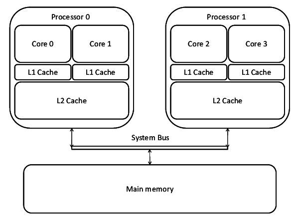

🧱 Paradigma Baru: Arsitektur Multi-Core
Pada pertengahan 2000-an, para insinyur menabrak "Tembok Daya" (Power Wall). Meningkatkan kecepatan clock lebih lanjut menghasilkan panas yang berlebihan dan tidak dapat dikelola. Solusinya adalah menempatkan beberapa inti pemrosesan (core) yang lebih efisien pada satu chip.

Pendekatan ini mengubah metrik kinerja dari kecepatan single-thread ke throughput paralel. Tantangan ini dijelaskan oleh Hukum Amdahl, yang menyatakan bahwa percepatan selalu dibatasi oleh bagian program yang tidak dapat diparalelkan.
💡 Fakta Menarik: Dari CPU ke GPU
Konsep throughput paralel didorong ke tingkat ekstrem oleh Graphics Processing Unit (GPU). Awalnya untuk merender grafis, arsitektur GPU dengan ribuan inti kecil kini digunakan secara luas untuk komputasi ilmiah dan kecerdasan buatan (AI).
🚀 Evolusi Sub-sistem Pendukung Kinerja
Hierarki Memori dan Peran Krusial Cache
Untuk menjembatani kesenjangan kecepatan prosesor-memori, digunakan cache memory. Strukturnya berevolusi menjadi hierarki multi-level (L1, L2, L3) yang semakin dekat ke inti, semakin cepat dan kecil ukurannya.

Mekanisme Cache: Studi Kasus Direct Mapping
Salah satu metode paling dasar untuk menentukan di mana data disimpan dalam cache adalah Direct Mapping. Dalam metode ini, setiap blok dari memori utama hanya memiliki satu kemungkinan lokasi di dalam cache. Lokasi ini ditentukan oleh beberapa bit tengah dari alamat memori.
Alamat memori dibagi menjadi tiga bagian:
- Tag: Bit-bit paling signifikan, digunakan sebagai penanda unik.
- Line (atau Index): Bit-bit tengah, yang secara langsung menentukan di baris (line) mana blok tersebut akan disimpan.
- Word (atau Offset): Bit-bit paling tidak signifikan, untuk memilih data spesifik di dalam blok.
Tag
Line / Index
Word / Offset
Contoh Perhitungan:
Misalkan sebuah sistem memiliki main memory 16 KB, cache 1 KB, dan ukuran blok 16 byte.
- Total Bit Alamat: 16 KB = 24 × 210 = 214 byte → Alamat 14 bit.
- Bit Word (Offset): Ukuran blok 16 byte = 24 byte → 4 bit.
- Jumlah Line di Cache: Kapasitas Cache / Ukuran Blok = 1 KB / 16 B = 1024 / 16 = 64 line.
- Bit Line (Index): Jumlah line 64 = 26 → 6 bit.
- Bit Tag: 14 (total) - 6 (line) - 4 (word) = 4 bit.
Maka, format alamat untuk sistem ini adalah: Tag (4 bit), Line (6 bit), Word (4 bit). Untuk menguji pemahaman lebih lanjut, silakan kunjungi halaman Latihan & Kuis.
Interkoneksi Sistem: Dari Bus ke Point-to-Point
Di masa lalu, semua komponen berkomunikasi melalui jalur bersama yang disebut system bus. Seiring meningkatnya kecepatan, bus ini menjadi bottleneck. Arsitektur modern beralih ke skema interkoneksi point-to-point seperti QuickPath Interconnect (QPI) dan PCI Express (PCIe).
🏁 Kesimpulan: Trajektori Evolusi
Perjalanan evolusi arsitektur mikroprosesor adalah kisah inovasi tanpa henti. Lintasan ini dapat diringkas sebagai berikut:
- Fondasi: Konsep stored-program von Neumann.
- Revolusi Material: Transistor dan IC memulai lintasan Hukum Moore.
- Era Mikroprosesor: Integrasi CPU ke satu chip.
- Tembok Kinerja: Hambatan daya menghentikan perlombaan clock.
- Paradigma Paralel: Arsitektur multi-core menjadi solusi.